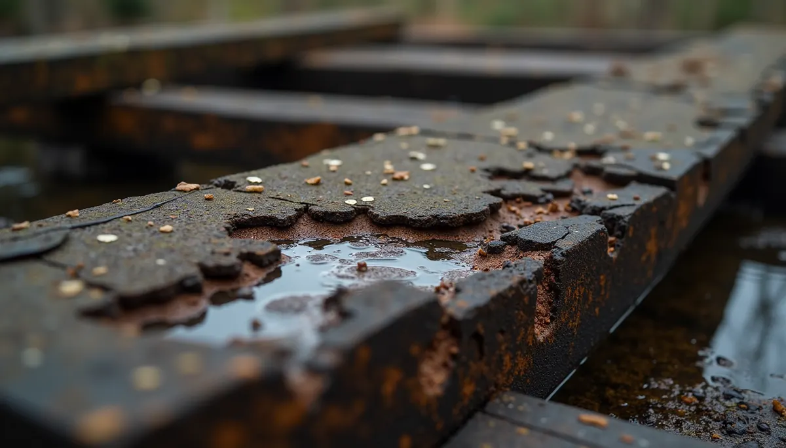
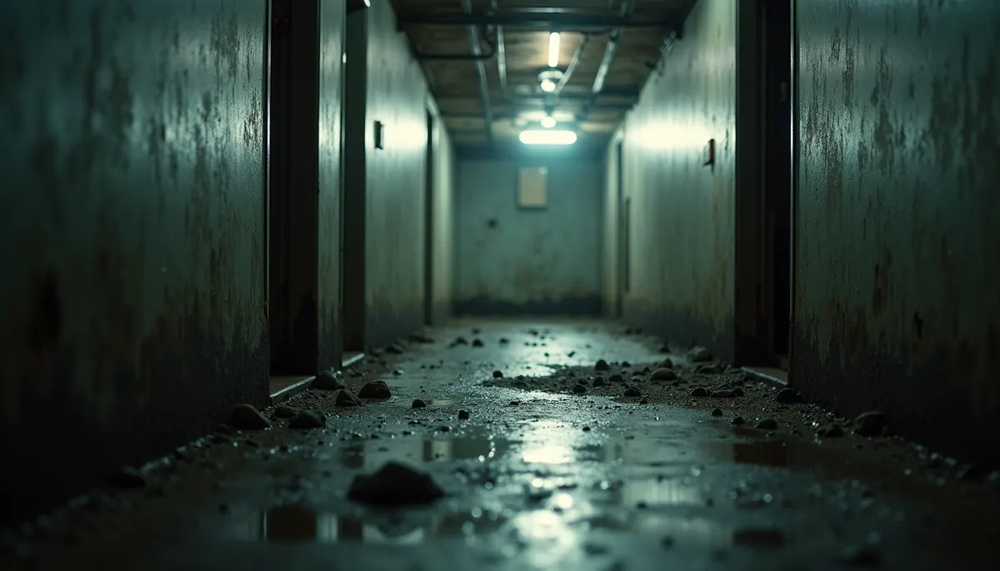

As homeowners, we often prioritize the visible aspects of our properties. We focus on the fresh paint, pristine lawns, and modern interiors. Yet, lurking behind the scenes are serious dangers that can undermine our safety: hidden leaks and the mold they promote. It’s time to pay attention to these often-overlooked threats, which can cause substantial damage to both our homes and our health.
The Deceptive Nature of Hidden Leaks
Hidden leaks often slip under our radar. Unlike a sudden pipe burst, they can be gradual and deceptively subtle. Consider a slow drip from a broken pipe fitting hidden behind drywall, or moisture accumulating under your kitchen sink. It could even be a tiny pinhole leak in a water supply line beneath a bathroom vanity.
These minor issues can develop over time into major problems. For example, a leak that drips just once per minute can waste over 17 gallons of water in a month—adding to your water bill and damaging your home.
The Dangers of Neglecting Hidden Leaks
Structural Damage
Exposure to constant moisture can weaken wood, drywall, and subflooring, threatening the overall integrity of your home. For instance, wooden beams that stay damp for too long can begin to rot, necessitating repairs that can run into thousands of dollars. According to industry estimates, structural repairs related to water damage can cost homeowners anywhere from $1,000 to $20,000, depending on the extent of damage and necessary interventions.

Skyrocketing Water Bills
A small, unnoticed leak can significantly inflate your monthly water bill. A steady drip can lead homeowners to pay for hundreds of gallons of water that simply seep into the ground rather than being used. Reports suggest that homeowners can lose about 10,000 gallons annually from leaks, leading to extra costs as high as $600 in a year.
Pest Infestations
Leaky areas create damp, dark environments that pests like termites, cockroaches, and rodents love. For instance, areas with hidden leaks are four times more likely to attract termites, which can lead to costly extermination and repair work.
The Unseen Threat: Mold Growth
Mold is perhaps the most severe consequence of hidden leaks, thriving wherever moisture and organic material are present. If undetected, mold can spread rapidly behind walls and under cabinets, often remaining invisible until it becomes a significant issue.
The Insidious Nature of Mold: A Health Hazard Hiding in Plain Sight
Mold can cause considerable health problems, especially if it proliferates in your home without your notice. The hidden nature of this threat can lead to serious health impacts for you and your family.
Respiratory Issues
Mold spores escape into the air and can be inhaled, leading to respiratory problems such as asthma, allergies, and chronic sinus infections. In fact, 10% of the U.S. population suffers from asthma, and mold exposure can exacerbate their symptoms.
Impact on Immunocompromised Individuals
For individuals with weakened immune systems, mold exposure can lead to grave health issues. Complications can arise, putting them at risk for severe infections that may require hospitalization.
The Importance of Detection and Prevention
Regular Inspections
Regular inspections by Angle Stop Plumbing are crucial for identifying areas where moisture can accumulate, such as bathrooms, kitchens, basements, crawlspaces and attics. Homeowners should make a habit of checking these areas at least quarterly for any signs of water damage or mold growth.

Use of Moisture Meters
Consider investing in a moisture meter to check for hidden dampness around plumbing fixtures, walls, and even basements. Recognizing high moisture levels early can prevent mold growth and the ensuing costs related to damage and health concerns.
Professional Help
If you suspect a leak or see evidence of mold, seeking professional help is wise. Water leak like your local plumbing professionals at Angle Stop Plumbing can locate hidden leaks, manage mold outbreaks, and help restore your home's safety.
Taking Action Before It's Too Late
Hidden leaks and the mold they encourage are threats that should not be ignored. Neglecting the signs can lead to structural damage, expensive water bills, pest infestations, and serious health issues.
Homeowners should actively monitor and address these issues to keep their homes safe and welcoming. By being proactive and vigilant, you can safeguard both your home and your health from potentially serious consequences.
Remember, tackling these problems early will save you from costly repairs and health risks down the road. Don’t wait until the damage becomes impossible to ignore; take action now to protect your sanctuary.